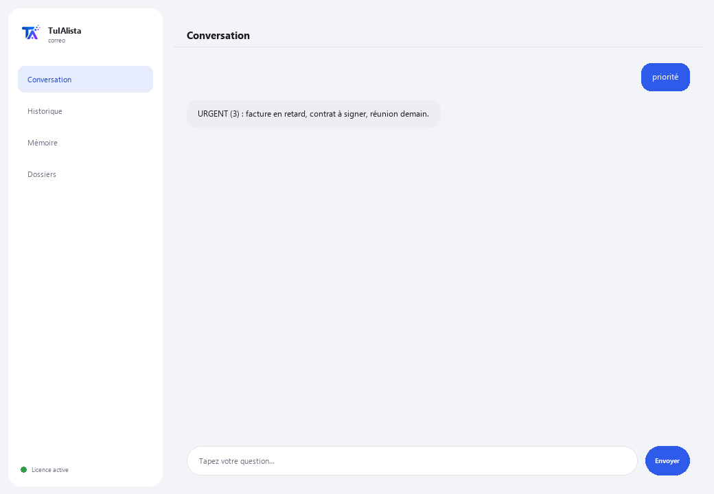

Agent Courrier
Organise votre boîte de réception, vous dit ce qui est urgent et rédige des réponses pour vous — en traitant tout sur votre ordinateur.
Que résout-il et de quoi avez-vous besoin ?
Le courrier électronique est l'un des plus grands gouffres de temps de la journée : des dizaines de messages où l'urgent se mélange au bruit. Cet agent transforme cette boîte chaotique en une liste d'actions claire — priorisée, avec des tâches extraites et des brouillons prêts.
- Vous avez besoin de : votre clé de licence (TIA-XXXX-XXXX-XXXX-XXXX) et du dossier contenant vos e-mails exportés (.eml, .mbox, .txt ou .csv). Ni Python ni connaissances techniques.
- Premier résultat en moins de 5 minutes : vous installez, activez, choisissez votre dossier et lancez priorité pour voir votre boîte triée par urgence.
- Vos e-mails ne quittent jamais votre ordinateur — l'analyse s'exécute localement.
soporte@tuialista.com ou visitez tuialista.com/soporte — nous répondons généralement le jour même.1 Ce que fait cet agent
Vous lui indiquez le dossier contenant vos e-mails exportés et il :
- Les lit tous (.eml, .mbox, .txt et .csv), sans connexion à des serveurs de messagerie.
- Priorise chaque message : urgent, important, normal ou bas.
- Extrait les tâches qu'on vous demande, avec qui les demande et pour quand.
- Détecte les messages probablement restés sans réponse.
- Rédige des brouillons de réponse professionnels dans la langue de l'e-mail.
- Regroupe par expéditeur et recherche dans vos e-mails.
- Répond à vos questions sur la boîte : “que m'a-t-on demandé avec une date limite cette semaine ?”
Résultat : vous arrêtez de perdre du temps dans la boîte et agissez d'abord sur ce qui compte vraiment.
2 Installation (2 minutes)
Pour Windows. Pas besoin d'internet permanent ni de rien envoyer sur le cloud.
Téléchargez l'installateur depuis tuialista.com/descargar (agent Courrier) et ouvrez-le. Il crée un raccourci sur votre bureau avec le logo — pas besoin de Python ni de terminal.
Double-cliquez sur la nouvelle icône. Collez votre clé de licence (reçue par e-mail à l'achat) et cliquez sur Activer. Une coche verte apparaît quand elle est valide.
Sélectionnez le dossier contenant vos e-mails exportés et cliquez sur Commencer à utiliser l'agent. La prochaine fois, il démarre directement — il se souvient de votre clé et de votre dossier.
3 Comment l'utiliser
L'agent ouvre une fenêtre de discussion, comme une app de messagerie — pas un écran noir de programmeur. Vous écrivez votre commande ou votre question dans le champ de texte en bas, cliquez sur Envoyer (ou Entrée), et la réponse apparaît comme un message, exactement comme sur cette image réelle :

Les commandes suivantes sont les mots que vous pouvez écrire dans ce même champ de texte :
> prioritéVotre boîte triée par urgence : URGENT, IMPORTANT, NORMAL, BAS. Marque ceux qui ont une date limite.
> résuméPanorama exécutif de la boîte : combien d'urgents/importants, expéditeurs les plus fréquents et quoi traiter en premier.
> tâchesE-mails qui demandent une action, avec qui la demande, la priorité et la date limite mentionnée s'il y en a une.
> répondre <objet>Brouillon de réponse à l'e-mail que vous indiquez (par objet ou numéro), dans la langue de l'original, avec des espaces [ENTRE CROCHETS] à compléter.
> en attenteE-mails qui demandent une action et dont l'expéditeur n'apparaît pas comme destinataire d'un autre de vos e-mails — probablement sans réponse.
> expéditeursRegroupe vos e-mails par expéditeur, classés par volume.
> chercher <texte>Cherche un mot ou une phrase dans l'objet et le corps. Ex. : chercher facture mars.
> question libre ?Écrivez toute question en langage naturel, ex. : quels e-mails urgents ai-je cette semaine ?
> quitterTermine la session (fonctionne aussi avec exit).
4 Exemples d'usage courant
Commencer la journée par l'urgent
priorité — vous voyez d'abord l'URGENT et ce qui a une date limite.
Ne pas oublier ce qu'on vous a demandé
tâches
Répondre vite et bien
répondre proposition de projet — vous obtenez un brouillon professionnel prêt à relire et envoyer.
Détecter ce qui est resté sans réponse
en attente
5 Questions fréquentes
Mes e-mails sont-ils envoyés sur internet ?
Se connecte-t-il à mon compte Gmail/Outlook ?
Ai-je besoin d'internet pour l'utiliser ?
Comment décide-t-il de la priorité ?
Dans quelle langue rédige-t-il les réponses ?
Comment détecte-t-il les “messages sans réponse” ?
Puis-je changer le dossier d'e-mails ?
Lit-il les pièces jointes (PDF, Word) ?
Modifie-t-il ou envoie-t-il des e-mails ?
Conserve-t-il un historique entre les sessions ?
6 Résolution de problèmes
Affiche “0 e-mails”
Un .csv ne se lit pas bien
Affiche “Licence invalide” ou demande de se reconnecter
“Aucun fournisseur d'IA configuré”
Aucune de ces solutions n'a résolu votre problème ? Écrivez-nous directement — nous serons ravis de l'examiner avec vous.
soporte@tuialista.com ou visitez tuialista.com/soporte — nous répondons généralement le jour même.7 Confidentialité
Vos e-mails ne quittent jamais votre ordinateur.
- L'agent lit et traite les fichiers localement, sur votre propre appareil. Il ne se connecte pas à votre serveur de messagerie ni n'envoie vos e-mails nulle part.
- La priorisation, la détection de tâches et le regroupement par expéditeur se produisent sur votre machine.
- La seule chose qui transite par internet est : (1) une vérification que votre licence est active — qui n'inclut pas le contenu de vos e-mails —, et (2) lors d'une demande de résumé, de brouillon ou de question, un fragment des e-mails pertinents est envoyé au moteur d'IA pour rédiger la réponse.